소방설비기사(기계분야) (2009-03-01 기출문제)
1과목: 소방원론
1. 알킬알루미늄의 소화에 가장 적합한 소화약제는?
- 마른모래
- 물
- 할로겐화합물
- 이산화탄소
(정답률: 59%)

2. 액화석유가스에 대한 성질을 설명한 것으로 틀린 것은?
- 무색 무취이다.
- 물에는 녹지 않으나 에테르에 용해된다.
- 공기 중에서 쉽게 연소, 폭발하지 않는다.
- 천연고무를 잘 녹인다.
(정답률: 60%)
3. 다음 중 증기비중이 가장 큰 것은 ?
- 이산화탄소
- 할론 1301
- 할론 2402
- 할론 1211
(정답률: 66%)
4. 증기압에 대한 설명으로 옳은 것은?
- 표면장력에 의해 물체를 들어 올리는 힘을 말한다.
- 원자의 중량에 비례하는 압력을 말한다.
- 증기가 액체와 평형상태에 있을 때 증기가 새어 나가려는 압력을 말한다.
- 같은 온도와 압력에서 기체와 같은 부피의 순수공기 무게를 말한다.
(정답률: 70%)
5. 물속에 넣어 저장하는 것이 안전한 물질은?
- 나트륨
- 이황화탄소
- 칼륨
- 탄화칼슘
(정답률: 74%)
6. 건물내에서 연기의 수직방향 이동속도는 약 몇 m/s 인가?
- 0.1~0.2
- 0.3~0.8
- 2~3
- 10~20
(정답률: 76%)
7. 건물의 화재시 피난자들의 집중으로 패닉(panic)현상이 일어날 수 있는 피난방향은?
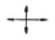
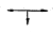
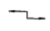
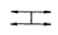
(정답률: 67%)
8. 다음 중 표면연소와 관계되는 것은?
- 코크스의 연소
- 휘발유의 연소
- 화약의 연소
- 나프탈렌의 연소
(정답률: 70%)
9. 기체나 액체, 고체에서 나오는 분해가스의 농도를 엷게 하여 소화하는 방법은?
- 냉각소화
- 제거소화
- 부촉매소화
- 희석소화
(정답률: 70%)
10. 다음 중 제2류 위험물이 아닌 것은?
- 철분
- 유황
- 적린
- 황린
(정답률: 66%)
11. 피난에 유효한 건축계획으로 잘못된 것은?
- 피난경로는 단순하게 하고 미로를 만들지 않아야 한다.
- 피난통로는 불연화하여야 한다.
- 1방향 피난로만 만들어야 한다.
- 정전시에도 피난방향을 알 수 있게 하여야 한다.
(정답률: 72%)
12. 정전기 발생 가능성이 가장 낮은 경우는?
- 접지를 하지 않은 경우
- 탱크에 석유류를 빠르게 주입하는 경우
- 공기 중에 습도가 높은 경우
- 부도체를 마찰시키는 경우
(정답률: 57%)
13. 내화구조의 철근콘크리트조 기둥은 그 작은 지름을 최소 몇 cm 이상으로 하는가?
- 10
- 15
- 20
- 25
(정답률: 23%)
14. 열의 3대 전달방법이라고 볼 수 없는 것은?
- 전도
- 분해
- 대류
- 복사
(정답률: 71%)
15. 연소시 백적색의 온도는 약 몇 ℃ 정도 되는가?
- 400
- 650
- 750
- 1300
(정답률: 60%)
16. 연기의 농도표시방법 중 단위체적당 연기입자의 개수를 나타내는 것은?
- 중량농도법
- 입자농도법
- 투과율법
- 상대농도법
(정답률: 64%)
17. 수소의 공기 중 연소범위는 약 몇 vol%인가?
- 0.4~4
- 1~12.5
- 4~75
- 67~92
(정답률: 64%)
18. 제3종 분말소화약제의 주성분은?
- 인산암모늄
- 탄산수소칼륨
- 탄산수소나트륨
- 탄산수소칼륨과 요소
(정답률: 73%)
19. 표면온도가 300℃에서 안전하게 작동하도록 설계된 히터의 표면온도가 360℃로 상승하면 300℃에 비하여 약 몇 배의 열을 방출할 수 있는가?
- 1.1배
- 1.5배
- 2.0배
- 2.5배
(정답률: 58%)
20. 방화구조의 기준을 옳게 나타낸 것은?
- 철망모르타르로서 그 바름두께가 2cm 이상인 것
- 시멘트모르타르위에 타일을 붙인 것으로서 그 두께의 합계가 1.5cm 이하인 것
- 두께 1.5cm 이상의 암면보온판위에 석면시멘트판을 붙인 것
- 두께 1.2cm 미만의 석고판위에 석면시멘트판을 붙인 것
(정답률: 62%)
2과목: 소방유체역학
21. 그림과 같이 수평 원관속을 점성유체가 층류 정상상태로 흐르고 있다. 전단응력 τ의 크기를 바르게 나타낸 것은?
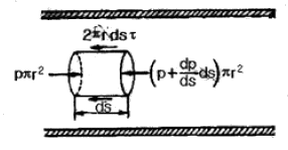
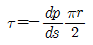
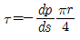
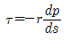
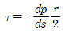
(정답률: 36%)
22. 소화설비에 적용되는 청정 소화약제가 아닌 것은?
- IG-100
- HFC-125
- FC-3-1-10
- HCFC-125
(정답률: 27%)
23. 비중병의 무게가 비었을 때는 2N이고, 액체로 충만되어 있을 때는 8N이다. 액체의 체적이 0.5L이면 이 액체의 비중량은 몇 N/m3 인가?
- 11000
- 11500
- 12000
- 12500
(정답률: 47%)
24. 그림과 같이 수평과 30° 경사된 폭 50cm 인 수문 AB가 A점에서 힌지(hinge)로 되어 있다. 이 물을 열기 위한 최소한의 힘 F(수문에 직각 방향)는 약 몇 kN 정도인가? (단, 수문의 무게는 무시하고, 유체의 비중은 1 이다.)
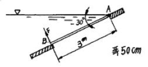
- 11.5
- 7.4
- 5.5
- 2.7
(정답률: 40%)
25. 펌프의 입구와 출구에서의 계기 압력이 각각-30kPa, 440kPa이고, 출구쪽 압력계는 입구쪽의 것보다 60cm 높은 곳에 설치되어 있으며, 흡입관과 송출관의 지름은 같다. 도중에 에너지 손실이 없고 펌프의 유량이 3m3/min 일 때 펌프의 동력은 약 몇 kW 인가?
- 22
- 24
- 26
- 28
(정답률: 45%)
26. 단단한 가스탱크에 10℃, 500kPa의 공기 10kg이 채워져 있다. 온도가 37℃로 상승할 경우, 압력 증가량은 약 몇 kPa인가?
- 24
- 48
- 72
- 96
(정답률: 48%)
27. 다음 물리량의 차원을 질량[M], 길이[L], 시간[T]으로 표시할 때 잘못 표시된 것은?
- 힘 : MLT-2
- 압력 : ML-2T-2
- 에너지 “ ML2T-2
- 밀도 : ML-3
(정답률: 37%)
28. 이상기체의 정압비열 Cp와 정적비열 C 와의 관계식으로 옳은 것은? (단, R은 가스상수이다.)
- Cp = Cv
- Cp < Cv
- Cp - Cv = R
- Cv / Cp = 1.4
(정답률: 47%)
29. 비중이 2인 유체가 지름 10cm인 곧은 원 관에서 층류로 흐를 수 있는 유체의 최대 평균 속도는 몇 m/s인가? (단, 임계 레이놀즈(Reynolds) 수는 2000이고, 점성계수 μ=2Nㆍs/m2이다.)
- 20
- 40
- 200
- 400
(정답률: 44%)
30. 손실과 표면장력의 영향을 무시할 때 그림과 같은 분류의 반지름 r에 대한 식을 H와 y의 항으로 표시하면?
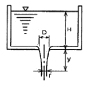
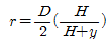
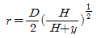
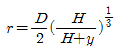
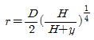
(정답률: 26%)
31. 공동현상 (cavitation)에 대한 설명으로 맞는 것은?
- 흐르는 물을 갑자기 정지시킬 때 수압이 급격히 변화하는 현상을 말한다.
- 유로의 어느 부분의 압력이 대기압과 같아지면 수중에 증기가 발생하는 현상을 말한다.
- 유로의 어느 부분의 압력이 그 수온의 포화 증기압보다 낮아지면 수중에 증기가 발생하는 현상을 말한다.
- 펌프의 입구와 출구의 진공계, 압력계의 지침이 흔들리고 동시에 송출유량이 변화하는 현상을 말한다.
(정답률: 42%)
32. 유체의 점성계수는 온도의 상승에 따라 어떻게 변하는가?
- 모든 유체에서 증가한다.
- 모든 유체에서 감소한다.
- 액체에서는 증가하고 기체에서는 감소한다.
- 액체에서는 감소하고 기체에서는 증가한다.
(정답률: 40%)
33. 소화용수로 사용되는 물의 동결방지제로 부적합한 것은?
- 글리세린
- 염화나트륨
- 에틸렌글리콜
- 프로필렌글리콜
(정답률: 45%)
34. 수온이 채워진 U자관에 어떤 액체를 넣었다. 액체 측 자유표면으로부터 깊이가 24cm 인 곳과 수은 측 자유표면으로 부터 깊이가 10cm 인 곳의 높이가 같다면 이 액체의 비중은 약 얼마인가? (단, 수은의 비중은 13.6이다.)
- 5.67
- 6.81
- 13.6
- 32.6
(정답률: 35%)
35. 원심식 송풍기에서 회전수를 변화시킬 때 동력변화를 구하는 식으로 맞는 것은? (단, 변화 전후의 회전수를 각각 N1, N2, 동력을 L1, L2로 표시한다.)
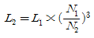
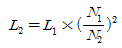
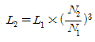
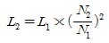
(정답률: 51%)
36. 표준상태에서 1.5×1023개의 산소분자가 차지하는 체적은 약 몇 L인가? (단, 아보가드로의 수는 6.02×1023이다.)
- 3.82
- 4.69
- 5.58
- 6.30
(정답률: 37%)
37. 피토관을 사용하여 일정 속도로 흐르고 있는 물의 유속(V)을 측정하기 위해, 그림과 같이 비중 S인 유체를 갖는 액주계를 설치하였다 .S=2일 때 액주의 높이 차이가 H=h가 되면, S=3일 때 액주의 높이 차(H)는 얼마가 되는가?
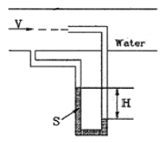
- h/9
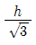
- h/3
- h/2
(정답률: 35%)
38. 탄산수소나트륨(NaHCO3)이 주성분인 분말 소화약제는?
- 제1종 분말
- 제2종 분말
- 제3종 분말
- 제4종 분말
(정답률: 61%)
39. 소화약제 중 강화액 소화약제의 응고점은 몇 ℃이하 이어야 하는가?
- 20℃
- -20℃
- 30℃
- -30℃
(정답률: 60%)
40. 길이가 2m 이고 반경이 각각 50cm, 51cm인 두 개의 동심실린더 사이에 유체가 채워져 있다. 바깥쪽 실린더를 고정시키고 안쪽 실린더를 3rpm으로 회전시키는데 필요한 토크는 약 몇 Nㆍm인가? (단, 유체는 점성계수가 5Nㆍs/m2 인 Newton 유체이며, 유체 유동은 속도 분포가 선형적인 Couette 유동이라고 가정한다.)
- 147
- 247
- 347
- 447
(정답률: 24%)
3과목: 소방관계법규
41. 다음은 소방대상물 중 지하구에 대한 설명이다. (㉮), (㉯), (㉰)에 들어갈 내용으로 알맞은 것은?
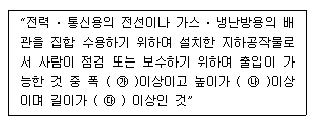
- ㉮ 1.8m ㉯ 2.0m ㉰ 50m
- ㉮ 2.0m ㉯ 2.0m ㉰ 500m
- ㉮ 2.5m ㉯ 3.0m ㉰ 600m
- ㉮ 3.0m ㉯ 5.0m ㉰ 700m
(정답률: 40%)
42. 다음은 소방시설설치유지 및 안전관리에 관한 법률에서 사용하는 용어의 정의에 관한 사항이다. (㉮), (㉯), (㉰)에 들어갈 내용으로 알맞은 것은?
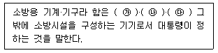
- ㉮ 소화기, ㉯ 감지기, ㉰ 자동식소화기
- ㉮ 소화기, ㉯ 소화약제, ㉰ 방염도료
- ㉮ 소화기, ㉯ 방염제, ㉰ 소방호스
- ㉮ 소화기, ㉯ 유도등, ㉰ 소방펌프자동차
(정답률: 32%)
43. 특정소방대상물 중 업무시설에 해당하지 않는 것은?
- 장례식장
- 발전소
- 소방서
- 국민건강보험공단
(정답률: 50%)
44. 다음 중 위험물탱크 안전성능시험자로 등록하기 위하여 갖추어야 할 사항에 포함되지 않는 것은?
- 자본금
- 기술능력
- 시설
- 장비
(정답률: 44%)
45. 소방시설등의 자체점검 중 작동기능점검을 실시한 경우 점검결과는 몇 년간 자체보관하여야 하는가?
- 1년
- 2년
- 3년
- 5년
(정답률: 57%)
46. 다음 중 소방공사감리 및 하자보수대상 소방시설과 하자보수 보증기간에 대한 설명으로 옳지 않은?
- 특정소방대상물의 관계인은 공사감리자의 변경이 있을 때에는 변경일로부터 14일 이내에 소방공사감리자변경신청서를 소방본부장 또는 소방서장에게 제출하여야 한다.
- 소방본부장 또는 소장서장은 공사감리자의 변경신고를 받은 때에는 3일 이내에 처리하고 공사감리자의 수첩에 배치되는 감리원의 등급ㆍ감리현장의 명칭ㆍ소재지 및 현장배치기간을 기재하여 교부하여야 한다.
- 하자보수의 보증기간은 유도등은 2년, 스프링클러설비는 3년이다.
- 하자보수의 보증기간은 무선통신보조설비는 2년, 자동식소화기는 3년 이다.
(정답률: 24%)
47. 특정소방대상물의 규모 등에 따라 갖추어야 하는 소방시설 등의 종류 중 자동식소화기를 설치하여야 하는 것은?
- 아파트
- 터널
- 지정문화재
- 가스시설
(정답률: 49%)
48. 다음 소방시설 중 경보설비에 속하지 않는 것은?
- 통합감시시설
- 자동화재탐지설비
- 자동화재속보설비
- 무선통신보조설비
(정답률: 52%)
49. 다음 중 방화관리자를 30일 이내에 선임하여야 하는 기준일로 옳지 않은 것은?
- 신축 등으로 신규로 방화관리자를 선임하여야 하는 경우에는 완공일
- 증축으로 1급 또는 2급 방화관리대상물이 된 경우에는 증축공사의 완공일
- 용도변경을 방화관리등급이 변경된 경우에는 건축 허가일
- 방화관리자를 해임한 경우 방화관리자를 해임한 날
(정답률: 42%)
50. 보일러 등의 위치ㆍ구조 및 관리와 화재예방을 위하여 불의 사용에 있어서 지켜야 하는 사항 중 보일러에 경유ㆍ등유 등 액체연료를 사용하는 경우에 연료탱크에는 화재등 긴급상황이 발생하는 경우 연료를 차단할 수 있는 개폐밸브를 연료탱크로부터 몇 [m]이내에 설치하여야 하는가?
- 0.5m
- 0.6m
- 1.0m
- 1.5m
(정답률: 26%)
51. 다음 중 그 성질이 자연발화성물질 및 금수성 물질인 제3류 위험물에 속하지 않는 것은?
- 황린
- 칼륨
- 나트륨
- 황화린
(정답률: 56%)
52. 소방시설관리업의 등록기준에서는 인력기준을 주된 기술 인력과 보조 기술인력으로 구분하고 있다. 다음 중 보조 기술인력에 속하지 않는 것은?
- 소방시설관리사
- 소방설비기사
- 소방공무원으로 3년 이상 근무한 자로서 소방기술인정 자격수첩을 교부 받은 자
- 소방설비산업기사
(정답률: 37%)
53. 소방대상물의 위치ㆍ구조설비 또는 관리의 상황에 관하여 화재예방, 인명보호 및 재산보호 등이 필요한 경우 개수명령을 할 수 있는 자는?
- 행정안전부장관
- 소방방재청장
- 시ㆍ도지사
- 소방본부장 또는 소방서장
(정답률: 49%)
54. 위험물 제조소에는 보기 쉬운 곳에 기준에 따라 “위험물제조소”라는 표시를 한 표지를 설치하여야 하는데 다음 중 표지의 기준으로 적합한 것은?
- 표지의 한변의 길이는 0.3m 이상, 다른 한변의 길이는 0.6m 이상인 직사각형으로 하되 표지의 바탕은 백색으로 문자는 흑색으로 한다.
- 표지의 한변의 길이는 0.2m 이상, 다른 한변의 길이는 0.4m 이상인 직사각형으로 하되 표지의 바탕은 백색으로 문자는 흑색으로 한다.
- 표지의 한변의 길이는 0.2m 이상, 다른 한변의 길이는 0.4m 이상인 직사각형으로 하되 표지의 바탕은 흑색으로 문자는 백색으로 한다.
- 표지의 한변의 길이는 0.3m 이상, 다른 한변의 길이는 0.6m 이상인 직사각형으로 하되 표지의 바탕은 흑색으로 문자는 백색으로 한다.
(정답률: 59%)
55. 다음 중 특수가연물에 해당되지 않는 것은?
- 나무껍질 500킬로그램
- 가연성고체류 2000킬로그램
- 목재고공품 15세제곱미터
- 가연성액체류 3제곱미터
(정답률: 43%)
56. 방염성능기준 이상의 실내장식물 등을 설치하여야 할 특정 소방대상물로 옳지 않은 것은?
- 의료시설 중 정신보건 시설
- 건축물의 옥내에 있는 운동시설로서 수영장
- 노유자시설
- 통신촬영시설 중 방송국 및 촬영소
(정답률: 50%)
57. 다음 위험물 중 자기반응성 물질인 것은?
- 황린
- 염소산염류
- 특수인화물
- 질산에스테르류
(정답률: 60%)
58. 다음 중 소방용수시설에 대한 설명으로 옳은 것은?
- 시ㆍ도지사는 소방용수시설을 설치하고 유지ㆍ관리 하여야 한다.
- 주거지역ㆍ상업지역 및 공업지역에 설치하는 경우에는 소방대상물과의 수평거리를 140m 이하가 되도록 하여야 한다.
- 저수조는 지면으로부터의 낙차가 4.5m 이상이어야 한다.
- 흡수관의 투입구가 사각형의 경우에는 한 변의 길이가 30cm 이상이어야 한다.
(정답률: 30%)
59. 다음 중 방염대상물품에 대한 방염성능기준으로 적합한 것은?
- 불꽃에 의하여 완전히 녹을 때까지 불꽃의 접촉횟수는 3회 이상
- 버너의 불꽃을 제거한 때부터 불꽃을 올리며 연소하는 상태가 그칠 때까지 시간은 30초 이내
- 버너의 불꽃을 제거한 때부터 불꽃을 올리지 아니하고 연소하는 상태가 그칠 때까지 시간은 20초 이내
- 탄화한 면적은 20제곱센티미터 이내, 탄화한 길이는 50센티미터 이내
(정답률: 34%)
60. 다음 중 소방신호의 종류 및 방법으로 적절하지 않은 것은?
- 경계신호는 화재발생 지역에 출동할 때 발령
- 발화신호는 화재개 발생한 때 발령
- 해제신호는 소화활동이 필요 없다고 인정되는 때 발령
- 훈련신호는 훈련상 필요하다고 인정될 때 발령
(정답률: 53%)
4과목: 소방기계시설의 구조 및 원리
61. 청정소화약제 중에서 IG-541 의 혼합가스 성분비는?
- Ar 52%, N2 40%, CO2 8%
- N2 52%, Ar 40%, CO2 8%
- CO2 52%, Ar 40%, N2 8%
- N2 10%, Ar 40%, CO2 50%
(정답률: 43%)
62. 옥내 소화전 설비에 사용되는 전동기의 용량을 구하는 식
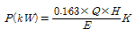
의 설명으로 틀린 것은?- Q : 정격토출량(m3/분)
- H : 전양정(m)
- E : 토출관의 지름(mm)
- K : 동력 전달계수
(정답률: 61%)
63. 포소화설비용 설비에 대한 설명 중 틀린 것은?
- 포소화펌프의 성능은 정격토출량의 150%로 운전시 정격토출압력의 65% 이상이 되어야 한다.
- 포소화펌프의 성능시험배관은 펌프의 토출측 개폐밸브 이전에서 분기한다.
- 포소화펌프의 성능은 체절운전시 정격토출압력의 140%를 초과하지 않아야 한다.
- 유량측정장치는 펌프의 정격토출량의 157%까지 측정할 수 있는 성능이 있어야 한다.
(정답률: 53%)
64. 통신기기실에 비치하는 소화기로 가장 적합한 것은?
- 포 소화기
- 이산화탄소 소화기
- 강화액 소화기
- 산ㆍ알칼리 소화기
(정답률: 57%)
65. 스프링클러 설비의 펌프실을 점검하였다. 펌프의 토출측 배관에 설치되는 부속장치 중에서 펌프와 체크밸브 (또는 개폐밸브) 사이에 설치하여서는 안 되는 배관은?
- 기동용 압력챔버 배관
- 성능시험 배관
- 물올림장치 배관
- 릴리프밸브 배관
(정답률: 46%)
66. 높이가 31m 이상인 건축물로서 지하층을 제외한 연면적이 60000m2일 경우에 소화용수 설비의 저수량은 얼마 이상 이어야 하는가? (단, 1층 및 2층 바닥면적 합계가 6000m2이다.)
- 160m3
- 100m3
- 80m3
- 60m3
(정답률: 33%)
67. 제연설비의 설치 장소를 제연구역으로 구획할 경우 틀린 것은?
- 거실과 통로는 상호 제연구획 할 것
- 통로상의 제연구역은 보행중심선의 길이가 60m를 초과하지 아니할 것
- 하나의 제연구역은 직경 60m 원내에 들어갈 수 있을 것
- 하나의 제연구역의 면적은 500m2이내로 할 것
(정답률: 59%)
68. 물분무소화설비가 부적합한 위험물은?
- 제5류 위험물
- 제6류 위험물
- 제3류 위험물
- 제4류 위험물
(정답률: 59%)
69. 스프링클러 설비의 헫 설치 기주에 대한 설명으로 틀린 것은?
- 공동주택의 거실에는 조기 반응형 스프링클러 헤드를 설치한다.
- 무대부 또는 연소할 우려가 있는 개구부에는 개방형 스프링클러 헤드를 설치한다.
- 습식 스프링클러외의 설비에서 동파의 우려가 없는 경우에는 하향식 스프링클러 헤드 설치가 가능하다.
- 아파트 거실의 천정, 반자 등 각 부분으로부터 하나의 스프링클러 헤드까지 수평거리는 1.7m 이하로 설치한다.
(정답률: 47%)
70. 소방대상물의 설치장소에 마른모래 50ℓ짜리 5포와 삽을 상비한 상태일 때 간이소화용구의 능력단위는 얼마인가?
- 1.5 단위
- 2 단위
- 2.5 단위
- 4 단위
(정답률: 53%)
71. 가연성가스의 저장, 취급시설에 설치하는 연결살수설비헤드에 관한 설명이다. 틀린 것은?
- 폐쇄형 스프링클러 헤드를 설치할 수 있다.
- 가스저장탱크, 가스홀더 및 가스발생기 주위에 설치한다.
- 헤드 상호간의 거리는 3.7m 이하로 하여야 한다.
- 헤드의 살수 범위는 가스저장탱크, 가스홀더 및 가스발생기의 몸체의 중간 윗 부분이 모두 포함되어야 한다.
(정답률: 24%)
72. 제연설비에 사용하는 송풍기의 종류와 관계 없는 것은?
- 다익형 송풍기
- 터보형 송풍기
- 리미트 로드형 송풍기
- 왕복형 송풍기
(정답률: 42%)
73. 소화활동설비가 아닌 것은?
- 제연설비
- 연결살수 설비
- 연결송수관 설비
- 소화용수 설비
(정답률: 45%)
74. 스프링클러 설비의 배관에 관한 설명 중 틀린 것은?
- 급수배관의 구경은 25mm 이상으로 한다.
- 수직배수관의 구경은 50mm 이상으로 한다.
- 지하매설배관은 소방용 합성수지 배관으로 설치할 수 있다.
- 교채배관의 최소구경은 65mm 이상으로 한다.
(정답률: 48%)
75. 사무실 용도의 장소에 스프링클러를 설치할 경우 교차배관에서 분기되는 지점을 기준으로 한쪽의 가지배관에 설치되는 하향식 스프링클러 헤드는 몇 개 이하로 설치하는가? (단, 수리역학적 배관방식의 경우는 제외한다.)
- 8개
- 10개
- 12개
- 16개
(정답률: 59%)
76. 호스릴 이산화탄소 설비의 설치기준으로 틀린 것은?
- 노즐담 소화약제 방출량은 20℃에서 60초에 60kg 이상이어야 한다.
- 소화약제 저장용기는 호스릴 2개 마다 1개 이상 설치해야 한다.
- 소화약제 저장용기의 가장 가까운 보기 쉬운 곳에 표시등을 설치해야 한다.
- 약제 개방밸브는 호스의 설치장고에서 수동으로 개폐할 수 있어야 한다.
(정답률: 46%)
77. 분말 소화약제의 가압용 가스용기의 설치 기준에 대한 설명으로서 틀린 것은?
- 가압용 가스는 질소가스 또는 이산화탄소로 한다.
- 가압용 가스용기를 3병 이상 설치한 경우에 있어서는 2개 이상의 용기에 전자 개방밸브를 부착한다.
- 분말소화약제의 가스용기는 분말 소화약제의 저장용기에 접속하여 설치한다.
- 분말 소화약제의 가압용 가스용기에는 2.5MPa 이상의 압력에서 압력 조정이 가능한 압력조정기를 설치한다.
(정답률: 35%)
78. 이산화탄소 소화약제 저장용기와 선택밸브 또는 개폐밸브 사이에는 내압시험압력 몇 배에서 작동하는 안전장치를 설치하여야 하는가?
- 0.1배
- 0.3배
- 0.5배
- 0.8배
(정답률: 61%)
79. 소방대상물에 따라 적응하는 포소화설비의 종류 및 적응성에 관한 설명으로 틀린 것은?
- 항공기 격납고에는 포워터스프링클러설비ㆍ포헤드설비를 설치한다.
- 완전 개방된 옥상주차장에는 호스릴포소화설비 또는 포소화전설비를 설치한다.
- 자동차 차고에는 포워터스프링클러설비ㆍ포헤드설비를 설치한다.
- 소방기본법시행령 별표2의 특수가연물을 저장ㆍ취급하는 공장에는 호스릴포소화설비를 설치한다.
(정답률: 57%)
80. 금속제 피난 사다리의 분류로서 적당한 것은?
- 고정식 사다리, 내림식 사다리, 미끄럼식 사다리
- 고정식 사다리, 올림식 사다리, 내림식 사다리
- 올림식 사다리, 내림식 사다리, 수납식 사다리
- 신축식 사다리, 수납식 사다리, 접는식 사다리
(정답률: 54%)